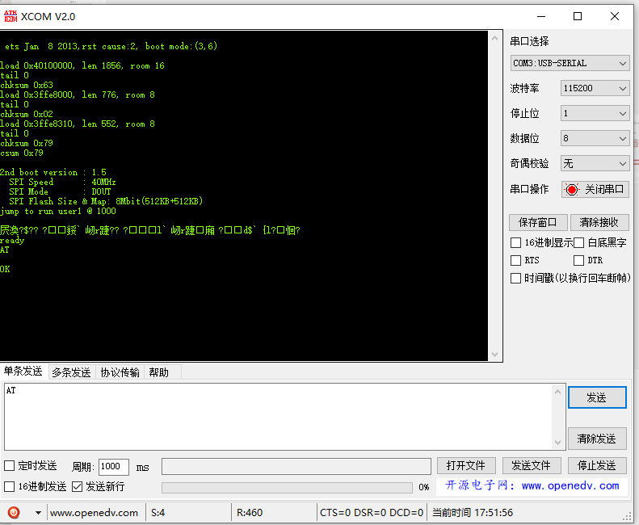

更新板载 ESP8285 固件
1. 简介：
目前 MaixPy 系列采用 M1W 模块的作为核心模块的开发板有: MaixDock(M1W)， MaixGo
通常情况下我们不需要更新模块内部 WIFI SOC ESP8285 的固件，但是如果使用过程中存在 bug，以及有新版本的固件发布是我们就可以更新固件
MaixDock、MaixGo 使用的 M1W 模块中的 ESP8285 默认烧录的是 AT 固件
2. 验证 ESP8285 是否能够正常工作
- MaixPy 验证 ESP8285 是否正常工作例程
查看文本末尾例程
外接 USB 转串口模块测试
使用 USB 转串口模块，按照下表连接之后上电
| M1W | USB 模块 | 说明 | | -------------------------------------- | -------- | ---- | | M1W GND | GND | 共地 | | K210 (IO6)/ESP8285 TX | RX | | | K210 (IO7)/ESP8285 RX | TX | | | k210 RST(上电之前接地，全过程拉低 RST) | GND | |
上电之后板子会在串口输出(这里使用 XCOM) 来验证 ESP8285 是否正常启动 
{kind=link}
3. AT 指令集
ESP8285 和 ESP8266 为同一系列产品，使用同一套 AT 指令集 ESP8285/ESP8266/ESP32 最新 AT指令集 https://github.com/espressif/esp-at/blob/v2.0.0.0_esp8266/docs/ESP_AT_Commands_Set.md
4. 更新 ESP8285 固件步骤
在烧录 ESP8285 固件之前，先了解下 ESP8285 烧录原理:
4.1. ESP8285 固件烧录原理
ESP8285 在上电时，会判断 boot stapping 管脚的状态，并决定启动(boot)模式, 如:
ets Jan 8 2013,rst cause:1, boot mode:(3,2)
其中打印的 boot mode 的第一位数字（3）代表当前的 boot 模式。 Boot 模式由 strapping 管脚的 3 位值 [GPIO15， GPIO0， GPIO2] 共同决定。如下表所 示：
| Strapping 管脚的 3 位值/[GPIO15， GPIO0， GPIO2] | Boot 模式 |
|---|---|
| 7 / [1， 1， 1] | SDIO HighSpeed V2 IO |
| 6 / [1， 1， 0] | SDIO LowSpeed V1 IO |
| 5 / [1， 0， 1] | SDIO HighSpeed V1 IO |
| 4 / [1， 0， 0] | SDIO LowSpeed V2 IO |
| 3 / [0， 1， 1] | Flash Boot |
| 2 / [0， 1， 0] | Jump Boot |
| 1 / [0， 0， 1] | UART Boot |
| 0 / [0， 0， 0] | Remapping |
ESP8285 进入不同模式的 IO 电平请看如下表：
| 模式 | CH_PD(EN) | RST | GPIO15 | GPIO0 | GPIO2 | TXD0 |
|---|---|---|---|---|---|---|
| UART 下载模式 | 高 | 高 | 低 | 低 | 高 | 高 |
| Flash 运行模式 | 高 | 高 | 低 | 高 | 高 | 高 |
| Chip 测试模式 | - | - | - | - | - | 低 |
而以 MaixDock 为例，可以看到 MaixDock 原理图如下：


4.2. 准备
这里以 MaixDock(M1W), Windows 10 系统为例
- 硬件: MaixDock, USB Type-C 数据线
软件:
ESP 固件更新工具：ESP8285 flash_download_tools
下载链接：乐鑫官网：flash_download_tools


ESP8285 AT 固件：
- 下载链接：ESP8266 AT bin
乐鑫官方下载链接: espressif_esp8266-at

4.3. 更新（这里以 MaixDock 为例）：
按照下面配置，连接 MaixDock,

打开 flash_download_tools，
下载 MaixDock ESP8285 固件
选择 ESP8285 串口(一般都是串口号比较大的)
设置下载选项:
- 如图配置相应选项, 注意波特率一定要设置为 115200
点击 Start 更新固件，并等待完成更新
验证更新是否完成
- 使用 XCOM, 打开 ESP8285 串口，点击 RST 复位 ESP，如图即刷入成功

- 使用 XCOM, 打开 ESP8285 串口，点击 RST 复位 ESP，如图即刷入成功
4.4. MaixPy 例程测试：
import network, time
from machine import UART
from Maix import GPIO
from fpioa_manager import fm, board_info
# En SEP8285 rst
#fm.register(8, fm.fpioa.GPIOHS0, force=True)
#wifi_en=GPIO(GPIO.GPIOHS0, GPIO.OUT)
#wifi_en.value(1)
# En SEP8285 rst
fm.register(0, fm.fpioa.GPIOHS0, force=True)
wifi_io15=GPIO(GPIO.GPIOHS0, GPIO.OUT)
wifi_io15.value(0)
fm.register(8, fm.fpioa.GPIOHS1, force=True)
wifi_en=GPIO(GPIO.GPIOHS1, GPIO.OUT)
wifi_en.value(1)
# for new MaixGO board, if not, remove it
#fm.register(0, fm.fpioa.GPIOHS1, force=True)
#wifi_io15_en=GPIO(GPIO.GPIOHS1, GPIO.OUT)
#wifi_io15_en.value(0)
fm.register(6, fm.fpioa.UART2_RX, force=True)
fm.register(7, fm.fpioa.UART2_TX, force=True)
uart = UART(UART.UART2,115200,timeout=1000, read_buf_len=4096)
def wifi_enable(en):
global wifi_en
wifi_en.value(en)
def wifi_deal_ap_info(info):
res = []
for ap_str in info:
ap_str = ap_str.split(",")
info_one = []
for node in ap_str:
if node.startswith('"'):
info_one.append(node[1:-1])
else:
info_one.append(int(node))
res.append(info_one)
return res
#wifi_enable(0)
time.sleep(2)
nic = network.ESP8285(uart)
ap_info = nic.scan()
ap_info = wifi_deal_ap_info(ap_info)
ap_info.sort(key=lambda x:x[2], reverse=True) # sort by rssi
for ap in ap_info:
print("SSID:{:^20}, RSSI:{:>5} , MAC:{:^20}".format(ap[1], ap[2], ap[3]) )